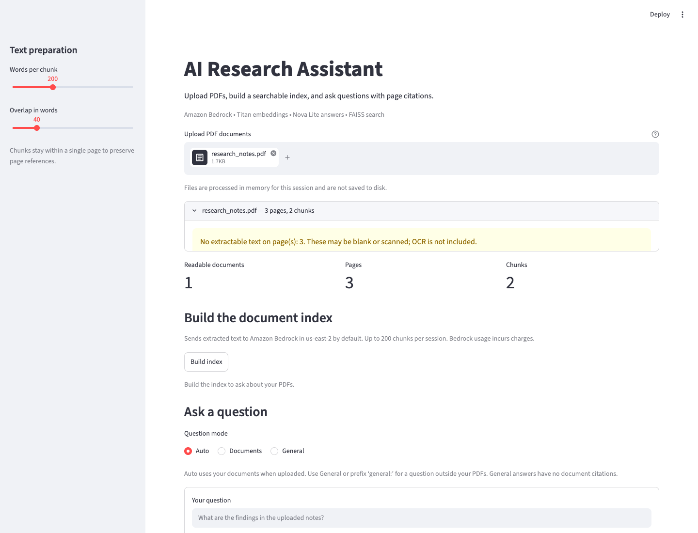
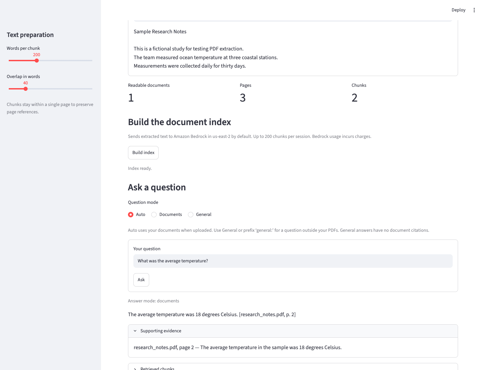

AI RESEARCH ASSISTANT
01 / EVIDENCE FIRSTPDF question answering, with a trail back to the source.
UPLOAD → INDEX
02 / PREPARE THE SOURCEPreserve the filename. Keep every page reference.

ASK → VERIFY
03 / FOLLOW THE CITATION“What was the average temperature?”
The answer points back to the source.
research_notes.pdf · p. 2
AI RESEARCH ASSISTANT
04 / THE IMPLEMENTATIONoffline tests passed
live Bedrock demo cases
single-task deployment